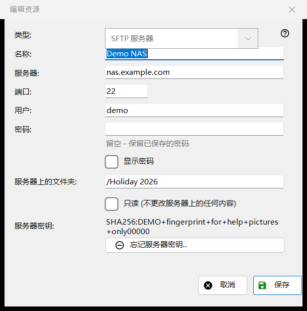
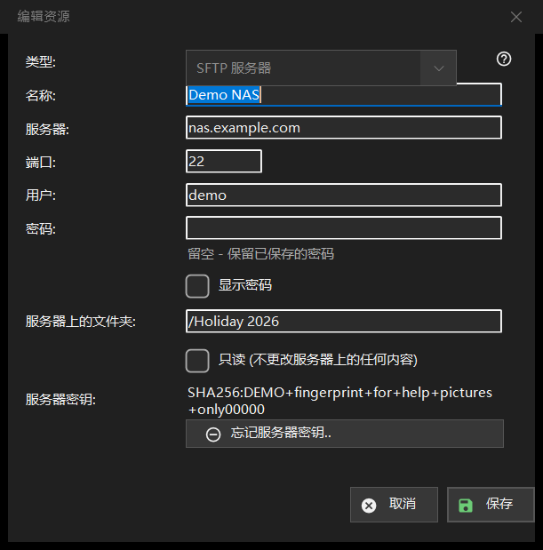

编辑资源
用途说明
一个已保存的服务器或网络文件夹的表单。资源列表中的「添加..」会打开空白表单，标题为「新建资源」；「编辑..」会打开已填好的表单，标题为「编辑资源」；在文件夹框中输入 sftp:// 地址也会打开它，并预先填好。


操作顺序
- 选择类型：SFTP 服务器或网络文件夹 (SMB)。
- 为资源命名，并输入服务器地址和端口，或网络路径。
- 输入用户名和密码。
- 设置服务器上的文件夹；如果那里不允许任何更改，请勾选只读。
- 点击「保存」。
界面元素
类型
「类型:」在创建资源时选择：「SFTP 服务器」（端口 22，文件夹 /）或「网络文件夹 (SMB)」。对已保存的资源，该列表处于禁用状态，因为保存的密码和服务器密钥只属于一种类型。对于 SMB，地址字段的标题是「网络文件夹:」，接受形如 \\server\folder 的路径；端口和文件夹字段仅用于 SFTP。
名称、服务器和端口
「名称：」是列表中显示的内容；为空时使用服务器地址。「服务器:」是名称或 IP 地址，「端口：」是 1 到 65535 之间的数字。更改服务器或端口会丢弃随导入资源而来的其他地址，因此已保存的密码绝不会发送到你没有输入的地址。
用户和密码
「用户:」和「密码：」。密码按你的 Windows 账户加密保存；列表中只保存对它的引用。对已保存的资源，该框为空，并带有提示「留空 - 保留已保存的密码」：只有要替换密码时才需要输入。「显示密码」一开始是关闭的。新资源必须有密码。
文件夹与只读
「服务器上的文件夹:」是查看器首先打开的文件夹，是以 / 开头的路径。「只读 (不更改服务器上的任何内容)」会让查看器把该资源当作只读：不能向其中移动或复制，不能在其中删除或重命名。
服务器密钥
「服务器密钥:」显示为此服务器记住的指纹，或者说明它会在首次连接时出现，由你在那时确认。「忘记服务器密钥..」仅在已记住密钥时显示。它会先询问（默认答案是「否」）并解释：如果服务器被重新安装过，这是正常的，否则可能有人在冒充它。它只清除密钥：下次连接会显示新的指纹并再次询问。
保存
「保存」会检查各字段，并在其下方用红色指出第一个问题：地址、端口、文件夹、用户名或缺少密码。「取消」关闭表单，不做任何更改。